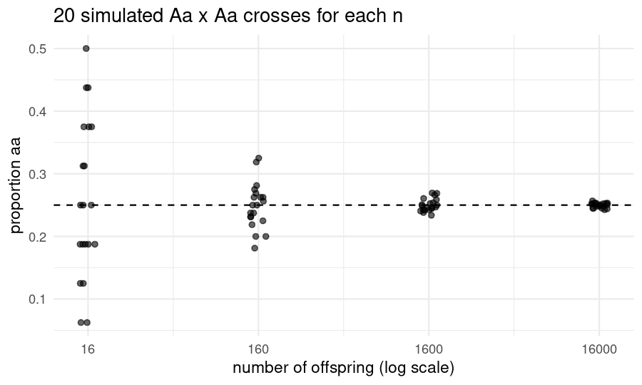

Exercise in R: Mendel, segregation & assortment
Goal
By the end of this exercise you should be able to:
- write a small R function that uses
sample()to simulate a cross, and see how observed ratios approach the expected ones as the number of offspring grows.
Before you start
This page builds on the by-hand part of the Exercise, so do that first. You need the packages dplyr and ggplot2.
Tasks
In R we simulate crosses. The new idiom is writing your own function and using sample() to draw at random. A function packs a few lines of code under one name, so you can run them again with different inputs:
my_function <- function(input1, input2) {
# ... code that uses input1 and input2 ...
result # the last value is what the function returns
}sample(x, n, replace = TRUE) draws n values from the vector x at random, with each value equally likely and the same value allowed more than once. That is exactly what a parent does when it passes one of its two alleles to each offspring.
We use set.seed() before each simulation, so you get the same random numbers as in the solutions.
library(dplyr)
library(ggplot2)R1. (two functions) Write gametes(genotype), which splits a genotype like "Aa" into its two alleles, and cross(p1, p2, n), which simulates n offspring of a single-gene cross: each offspring gets one allele drawn at random from each parent.
gametes <- function(genotype) {
strsplit(genotype, "")[[1]] # "Aa" -> c("A", "a")
}
cross <- function(p1, p2, n) {
a1 <- sample(gametes(p1), n, replace = TRUE) # one allele from parent 1
a2 <- sample(gametes(p2), n, replace = TRUE) # one allele from parent 2
# write the dominant (upper-case) allele first, so "aA" becomes "Aa"
ifelse(a1 == toupper(a1), paste0(a1, a2), paste0(a2, a1))
}
gametes("Aa")
set.seed(1)
cross("Aa", "Aa", 16)Count the genotypes in your 16 offspring by eye. Do you get exactly 4 : 8 : 4?
R2. (monohybrid: 1 : 2 : 1 and 3 : 1) Simulate 1000 offspring of Aa × Aa. Use table() and prop.table() to get the genotype counts and proportions, and compare them with 1 : 2 : 1. Then turn genotypes into phenotypes and compare with 3 : 1. Finally, compute the expected numbers for Mendel’s 7324 seeds and his observed ratio.
set.seed(2)
offspring <- cross("Aa", "Aa", 1000)
geno <- factor(offspring, levels = c("AA", "Aa", "aa")) # fixes the order
table(geno)
prop.table(table(geno))
pheno <- ifelse(offspring == "aa", "aa", "A_")
prop.table(table(pheno))
7324 * c(3/4, 1/4) # Mendel's 7324 seeds, expected round : wrinkled
5474 / 1850R3. (testcross) Reuse cross() for the testcross Aa × aa with 1000 offspring. What ratio do you expect, and what do you get?
set.seed(3)
tc <- cross("Aa", "aa", 1000)
table(factor(tc, levels = c("Aa", "aa")))R4. (two genes: 9 : 3 : 3 : 1) Independent assortment means that we can simulate each gene separately and put the results side by side. Simulate 1000 offspring of AaBb × AaBb, build the phenotype of each offspring, count the four classes with count(), and compare the proportions with 9/16, 3/16, 3/16, 1/16. Then compute the expected numbers for Mendel’s 556 seeds.
set.seed(44)
n <- 1000
dihybrid <- tibble(A = cross("Aa", "Aa", n),
B = cross("Bb", "Bb", n)) |>
mutate(pheno = paste0(ifelse(A == "aa", "aa", "A_"),
ifelse(B == "bb", "bb", "B_")),
pheno = factor(pheno, levels = c("A_B_", "A_bb", "aaB_", "aabb")))
dihybrid |>
count(pheno) |>
mutate(observed = n / sum(n),
expected = c(9, 3, 3, 1) / 16)
556 * c(9, 3, 3, 1) / 16 # Mendel's 556 seedsR5. (more offspring, less noise) Write a function prop_aa(n) that simulates one Aa × Aa cross with n offspring and returns the proportion of aa. Run it 20 times for each of n = 16, 160, 1600 and 16000, summarise, and plot the results with ggplot2. sapply() calls a function once for each value in a vector and collects the answers; we meet it again in Part 2.
prop_aa <- function(n) {
mean(cross("Aa", "Aa", n) == "aa") # TRUE counts as 1, FALSE as 0
}
set.seed(5)
sims <- tibble(n = rep(c(16, 160, 1600, 16000), each = 20))
sims$prop_aa <- sapply(sims$n, prop_aa)
sims |>
group_by(n) |>
summarise(lowest = min(prop_aa), mean = mean(prop_aa), highest = max(prop_aa))
ggplot(sims, aes(x = n, y = prop_aa)) +
geom_hline(yintercept = 1/4, linetype = "dashed") +
geom_jitter(width = 0.05, height = 0, alpha = 0.6) +
scale_x_log10(breaks = c(16, 160, 1600, 16000)) +
labs(x = "number of offspring (log scale)",
y = "proportion aa",
title = "20 simulated Aa x Aa crosses for each n") +
theme_minimal()How much does the spread shrink each time n grows ten-fold? Where would Mendel’s 7324 seeds sit on this plot?
R6. (three genes: the product rule) Simulate 64000 offspring of AaBbCc × AaBbCc. Check the fraction that is aa bb cc against 1/64, the fraction dominant for all three traits against 27/64, and count the distinct genotypes (compare with \(3^3\)).
set.seed(6)
n <- 64000
tri <- tibble(A = cross("Aa", "Aa", n),
B = cross("Bb", "Bb", n),
C = cross("Cc", "Cc", n))
mean(tri$A == "aa" & tri$B == "bb" & tri$C == "cc")
1/64
mean(tri$A != "aa" & tri$B != "bb" & tri$C != "cc")
27/64
tri |> distinct(A, B, C) |> nrow()In every task, observed and expected are close but not equal. To decide whether a difference is small enough to be chance, we need a test: the χ² goodness-of-fit test (chisq.test()), in the next unit.
Solutions
All output below is from Rscript --vanilla run in the unit folder. Note that table() sorts names alphabetically, and the order of “A” and “a” depends on your computer’s language settings. That is why we use factor(..., levels = ...) to fix the order.
R1.
[1] "A" "a"
[1] "Aa" "aa" "Aa" "AA" "Aa" "AA" "AA" "AA" "Aa" "Aa" "Aa" "AA" "AA" "Aa" "Aa"
[16] "aa"Counting by eye gives 6 AA : 8 Aa : 2 aa, not 4 : 8 : 4. With 16 offspring, chance alone easily moves a class by 2.
R2.
geno
AA Aa aa
247 503 250
geno
AA Aa aa
0.247 0.503 0.250
pheno
A_ aa
0.75 0.25
[1] 5493 1831
[1] 2.958919The genotype proportions 0.247 : 0.503 : 0.250 are close to ¼ : ½ : ¼, and the phenotypes happen to come out at exactly 0.75 : 0.25. For Mendel’s 7324 seeds, the expected numbers are 5493 : 1831; he observed 5474 : 1850, a ratio of 2.96 : 1.
R3.
Aa aa
493 507Expected 1 : 1 (500 : 500); observed 493 : 507.
R4.
# A tibble: 4 × 4
pheno n observed expected
<fct> <int> <dbl> <dbl>
1 A_B_ 571 0.571 0.562
2 A_bb 182 0.182 0.188
3 aaB_ 186 0.186 0.188
4 aabb 61 0.061 0.0625
[1] 312.75 104.25 104.25 34.75Approximately 9 : 3 : 3 : 1, just from simulating each gene separately: independence alone produces the dihybrid ratio. Mendel’s 315 : 108 : 101 : 32 are as close to 312.75 : 104.25 : 104.25 : 34.75 as our simulation is to its expected values.
R5.
# A tibble: 4 × 4
n lowest mean highest
<dbl> <dbl> <dbl> <dbl>
1 16 0.0625 0.259 0.5
2 160 0.181 0.249 0.325
3 1600 0.234 0.250 0.269
4 16000 0.243 0.250 0.257
The range of the 20 crosses shrinks by roughly a factor of 3 for each ten-fold increase in n (0.06–0.50, then 0.18–0.33, 0.23–0.27, 0.24–0.26). Noise in a proportion falls with \(\sqrt{n}\), and \(\sqrt{10} \approx 3.2\). Mendel’s 7324 seeds sit between 1600 and 16000; his wrinkled proportion, 1850/7324 = 0.253, lies well inside the spread we would expect there.
R6.
[1] 0.01460938
[1] 0.015625
[1] 0.42025
[1] 0.421875
[1] 27aa bb cc: 0.0146 against 1/64 = 0.0156. Dominant for all three: 0.420 against 27/64 = 0.422. All 27 = 33 genotypes appear.
Where this leads
Every simulated cross above was a little off from its expected ratio, and so were all of Mendel’s. In Probability & the χ² test you measure such deviations in R with chisq.test(), and use replicate() to run a simulation many times. sapply() comes back in Part 2.